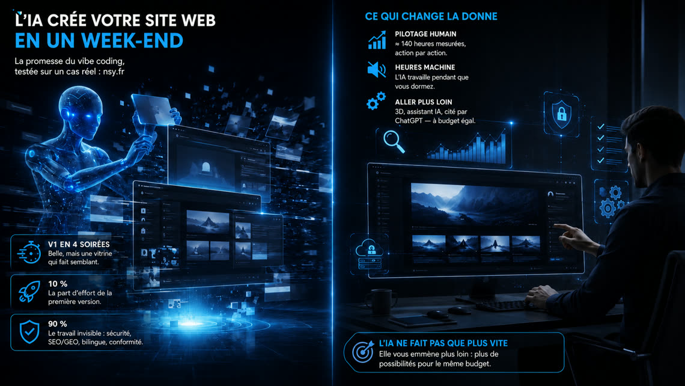

Créer son site avec l’IA en un week-end :
on a pris la promesse au mot
« Votre site web en un week-end grâce à l’IA. » La promesse est partout — outils de « vibe coding », générateurs de sites, démos spectaculaires. Plutôt que de la commenter, nous l’avons prise au mot, sur le cobaye dont nous connaissons chaque minute de l’histoire : nsy.fr lui-même. Chaque action de construction y est horodatée — versions enregistrées, sessions de travail avec l’IA — les chiffres de cet article sont donc mesurés, pas estimés de mémoire. Et une conviction en fil rouge : l’IA ne sert pas seulement à aller plus vite — elle sert à aller plus loin.

Verdict d’abord : la promesse est vraie
La première version de nsy.fr a demandé quatre soirées — une dizaine d’heures, l’équivalent honnête d’un week-end bien rempli. Elle était belle : page d’accueil animée (un réseau de neurones en toile de fond, une vidéo en héro), design sombre soigné, sections offres, à-propos, contact. Montrée à un proche, elle faisait son effet. Il y a trois ans, ce résultat aurait demandé des semaines à une personne seule.
C’est la partie de l’histoire que racontent les démos. Elle est exacte. Voici la suite.
Ce que la V1 était vraiment
L’inventaire de cette V1 tient en une ligne : une page, 22 fichiers, en français uniquement. Et surtout, une liste de ce qu’elle n’avait pas — invisible sur une capture d’écran : un formulaire de contact qui n’envoyait rien, aucune existence pour les moteurs de recherche ni pour les IA, aucune défense contre les robots spammeurs, pas de version anglaise, pas de mentions légales ni de politique de confidentialité.
Une V1 générée en un week-end, c’est une vitrine posée dans le désert : jolie, mais sans rue devant, sans serrure, et sans personne pour savoir qu’elle existe.
Les étapes suivantes, chronomètre en main
Entre cette V1 et le site que vous lisez : 328 versions enregistrées, et près de 140 heures de pilotage actif — mesurées action par action dans le journal de bord, pauses et nuits exclues. S’y ajoute un temps d’une toute autre nature : celui où l’IA exécutait seule — plus d’une tâche lancée le soir était terminée au réveil. Ce temps machine a son propre coût, celui de l’infrastructure d’IA, mais il ne se paie pas en soirées. C’est la vraie comptabilité d’un chantier mené avec l’IA : des heures de pilotage humain, démultipliées par des heures machine qui ne consomment pas votre temps.
≈ 8 h — un formulaire qui envoie vraiment
Presque autant de temps que toute la V1, pour un seul bouton. Brancher un vrai serveur d’envoi, valider les champs proprement dans les deux langues, gérer les états d’attente et d’erreur, envoyer un accusé de réception au visiteur. C’est la première leçon du chantier : derrière chaque élément « évident » d’un site, il y a une V1 qui fait semblant et une version qui fonctionne.
≈ 4 h — le site parle anglais, et la 3D arrive
Le passage bilingue FR/EN (avec mémorisation du choix du visiteur) et l’arrivée de la signature visuelle du site : une maquette filaire 3D interactive. Générée d’abord à 12 Mo — injouable sur mobile — elle a été retravaillée jusqu’à 660 Ko, moins qu’une photo. Quatre heures de pilotage seulement, parce que l’IA a fait le gros du travail entre deux consignes. L’IA produit vite ; faire léger, c’est un autre métier.
≈ 55 h — un studio 3D dans le chantier
Le plus gros bloc de temps du projet n’est pas du web : c’est de la création 3D sous Blender. Au-delà de la maquette interactive, une animation complète a été produite — véhicules modélisés et animés jusqu’au débattement des suspensions, éclairage, caméras multiples, rendu physique réaliste image par image, montage vidéo final. L’IA a piloté Blender comme elle pilote le code : scripts de scène, diagnostics de rendu, allers-retours sur le détail (une arête lumineuse qui traînait sur la route a occupé une soirée entière). Le résultat alimente notre offre Conception 3D — et illustre le vrai message de cette étape : avec l’IA, un site peut embarquer des productions qui relevaient hier d’un studio spécialisé.
≈ 20 h — le gros œuvre invisible
La part la moins photogénique. Des allers-retours à faire ce qu’aucune démo ne montre : la traque mobile (débordements d’écran, menus qui cassent selon la langue, bascules portrait-paysage, particularités d’Android) ; la performance et la sobriété (vidéos et animations mises en pause hors écran — votre batterie nous remercie) ; l’hygiène du référencement (versions FR/EN correctement liées entre elles, redirections propres) ; un premier assistant conversationnel — à l’époque un moteur à règles bilingue, sans IA générative ; et le questionnaire de faisabilité en 13 étapes qui qualifie les demandes entrantes. À la fin de cette phase, le site n’avait presque pas changé d’apparence. Il avait changé de nature.
≈ 30 h — la couche professionnelle
Le mois de la transformation : le site d’une page devient un site d’une cinquantaine de pages (offres détaillées, expertises, réalisations, FAQ de 52 questions-réponses). La couche GEO/LLMO s’installe — llms.txt, données structurées, entité Wikidata, inscriptions moteurs — tout ce qui permet à ChatGPT, Claude ou Perplexity de nous lire et de nous citer correctement. L’assistant à règles est remplacé par Ansley, un vrai modèle de langage ancré sur les faits du site, entouré de garde-fous : incapable d’inventer un lien, un chiffre ou une promesse. Et parce qu’un formulaire visible attire les robots, la défense anti-spam en profondeur se met en place. Le journal que vous lisez naît à la fin de cette phase, flux RSS compris.
≈ 12 h — l’usine à contenu et l’endurance
Les dernières semaines : le cycle de publication des articles (versions FR et EN, illustrations, distribution sociale — désormais automatisée vers nos réseaux), une suite de 30 tests automatisés qui rejoue les scénarios critiques avant chaque mise en ligne, des compteurs de lecture sans cookie, et les corrections remontées par les outils de Google — car un site indexé reçoit des alertes, et y répondre fait partie du travail.
Et tout récemment, la réalité a testé le chantier à notre place : un spam a traversé une des couches de défense. Analyse, durcissement, vérification en conditions réelles — le lendemain, le même message était bloqué. Un site vivant, c’est ça : pas un objet fini, un système qui apprend.
La règle des 10/90
De cette expérience, nous tirons une règle simple : la première version a coûté moins de 10 % de l’effort total — et produit 100 % de l’apparence. Les 90 % restants sont invisibles sur une démo : la sécurité, le référencement classique et génératif, le bilinguisme, la conformité, la performance, les tests, la maintenance — et parfois un studio 3D entier.
L’IA n’a pas réduit ces 90 % à zéro. Elle a fait mieux : elle les a rendus abordables — 140 heures de pilotage là où le même périmètre aurait demandé plusieurs fois plus il y a trois ans, une partie du travail tournant même pendant notre sommeil. Mais il a fallu savoir quoi construire, dans quel ordre, et reconnaître ce qui manquait — c’est exactement là que le métier a déménagé.
Aller plus vite — ou aller plus loin : le vrai choix
« Un site plus vite et moins cher », c’est la lecture la plus courante de l’IA — et la plus pauvre. Elle n’est pas fausse : si votre besoin est une V1 propre pour exister — tester un marché, poser une adresse, montrer patte blanche — l’IA la rend plus abordable que jamais, et c’est un choix parfaitement légitime. À une condition : y ajouter le socle non négociable (un formulaire qui envoie, une défense anti-robots, la conformité, le référencement de base). Une V1 assumée, ce n’est pas une V1 nue.
Mais le choix le plus intéressant est l’autre : garder le budget d’un site classique, et laisser l’IA en transformer le contenu. Les heures que l’IA économise sur le travail standard ne disparaissent pas — elles se réinvestissent dans ce qui était hors de portée. Sur nsy.fr, tout ce qui fait la différence est né de ce réinvestissement : une animation 3D digne d’un studio et la maquette interactive qui l’accompagne, un assistant IA qui répond sur nos faits sans jamais rien inventer, la couche qui nous fait citer par ChatGPT ou Perplexity, le bilinguisme intégral, la distribution automatique des publications, une suite de tests qui veille avant chaque mise en ligne. Il y a trois ans, chacune de ces briques aurait été un projet à part entière, chiffré à part — et pour un site de cette taille, la plupart n’auraient tout simplement jamais été envisagées.
C’est ça, le déplacement réel : à budget égal, la question n’est plus « en combien de temps aurons-nous le même site ? » mais « jusqu’où pouvons-nous aller ? »
Ce que ça change si vous voulez un site
Générer une V1 vous-même en un week-end ? Faites-le, sincèrement — c’est un excellent moyen de préciser ce que vous voulez. Gardez seulement en tête que ce week-end vous donne la carrosserie ; le moteur, c’est l’autre chiffre du journal de bord : 90 %.
Et au moment de passer au site qui travaille, posez la vraie question — pas seulement « en combien de temps, pour combien ? », mais « qu’est-ce que l’IA nous permet d’explorer que nous n’aurions pas osé chiffrer avant ? ». Une animation 3D de votre produit ? Un assistant qui répond la nuit sans dire de bêtises ? Être la réponse que donnent les IA quand on cherche votre métier dans votre région ? C’est le même budget qu’hier. Ce n’est plus le même site.
Vous avez une V1 qui dort, ou un projet qui démarre ? Parlons-en — ou testez votre idée en 5 minutes avec notre questionnaire de faisabilité.
Cet article vit aussi sur les réseaux — venez en discuter